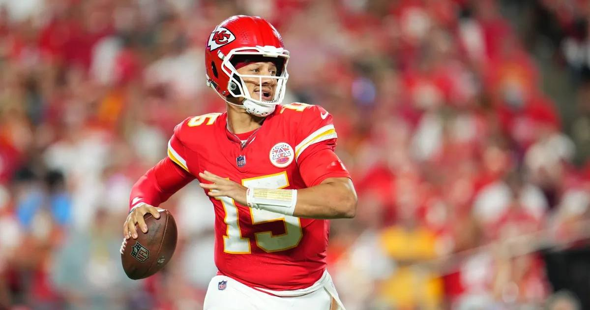

First Place in the AFC West: Chiefs Visit Broncos in a 4:25 Showdown at Mile High
The 5-1 Chiefs visit the 5-2 Broncos on Sunday at 4:25 PM ET on CBS, with Kansas City a 1.5-point favorite in a game that decides first place in the AFC West.

The late-afternoon window belongs to the AFC West. The Kansas City Chiefs (5-1) visit the Denver Broncos (5-2) at Empower Field at Mile High on Sunday at 4:25 PM ET on CBS, with first place in the division on the line. The market has it tight: Kansas City -1.5, total 41.5, moneyline Chiefs -115 / Broncos -105, via the ESPN scoreboard's DraftKings odds.
A 1.5-point spread is the market saying "we think Kansas City is better, and we think Denver at home is good enough to make that almost irrelevant." A 41.5 total is the market saying "don't expect a shootout." Both of those things can be true, and usually are when these two meet in Denver in November.
The matchup
The story of this game starts with two quarterbacks who are not close to equal right now. Patrick Mahomes is completing 64.9 percent of his passes for 245.7 yards per game in 2026, with a 95.3 passer rating through six games. Bo Nix counters at 59.2 percent for 181.6 yards per game and an 80.7 rating.
But Mahomes is coming off a rough Week 7 in Seattle — 165 yards, zero touchdowns, one interception — a game in which Kansas City's backfield managed only 36 total rushing yards. And Denver is 5-2, at home in a divisional game, with a defense that gets its best corner back at the right time. The Chiefs are the better team on paper. The Broncos are the team with the building, the altitude, and the record that says they belong in this conversation.
Injury report
Kansas City: The Chiefs' out list includes Tyquan Thornton, Mansoor Delane, Omarr Norman-Lott, Brashard Smith, L'Jarius Sneed, and Ethan Downs. Travis Kelce is not on it, which matters more than any name that is.
Denver: Cornerback Pat Surtain II is healthy, which is the single most important injury update in this game — Denver's best defensive player, back for the quarterback who has tormented this division for years.
Storylines to watch
1. First place, for real. This is not a "big game" in the vague sense. The winner leaves Sunday in first place in the AFC West. The loser spends the next week hearing about tiebreakers.
2. Mahomes vs. Nix, again. Mahomes has owned this matchup statistically — 264 yards a game, 23 touchdowns in five meetings. Nix's job is not to outduel Mahomes. It is to avoid the game-losing mistake and let Denver's defense and home field do the rest.
3. Can Kansas City run the ball? Thirty-six rushing yards from the backfield in Seattle is how you end up with 165 passing yards and a loss. If Denver's front makes Kansas City one-dimensional again, Surtain being healthy makes that one dimension a lot harder to live in.
No bet pick in this preview — the picks live in their own posts. This one is about the division: 5-1 vs. 5-2, a point and a half, and a late-afternoon game that will probably feel a lot bigger than 41.5 points.
Sources: ESPN NFL scoreboard, Week 8 (DraftKings odds), OddsIndex — Chiefs vs. Broncos game preview, SportsLine — Chiefs vs. Broncos game projections, Covers — Chiefs vs. Broncos prop picks
Gear up: Fanatics